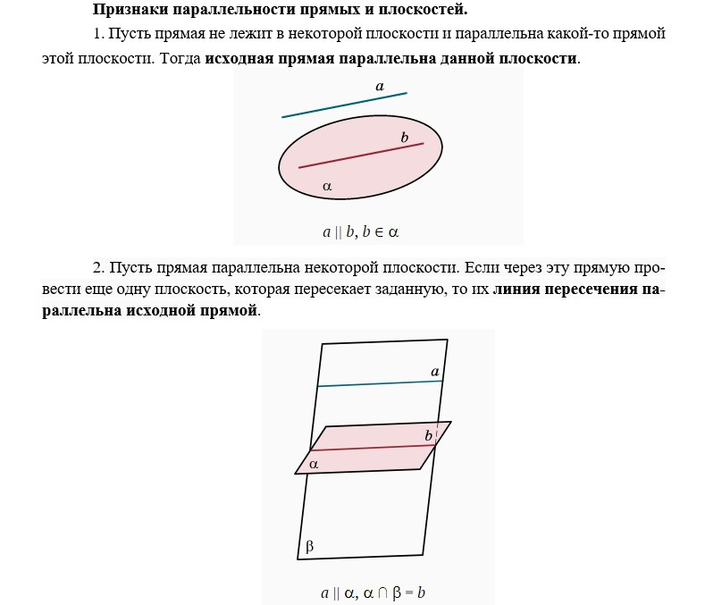
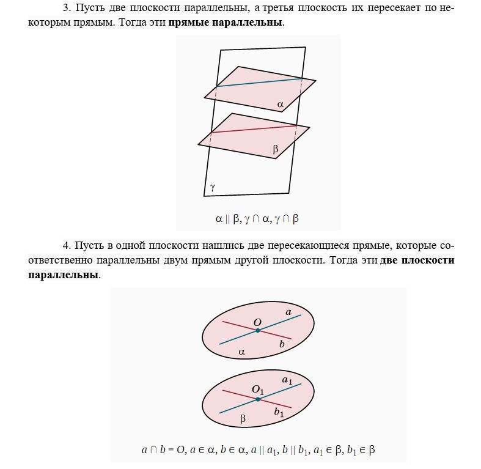
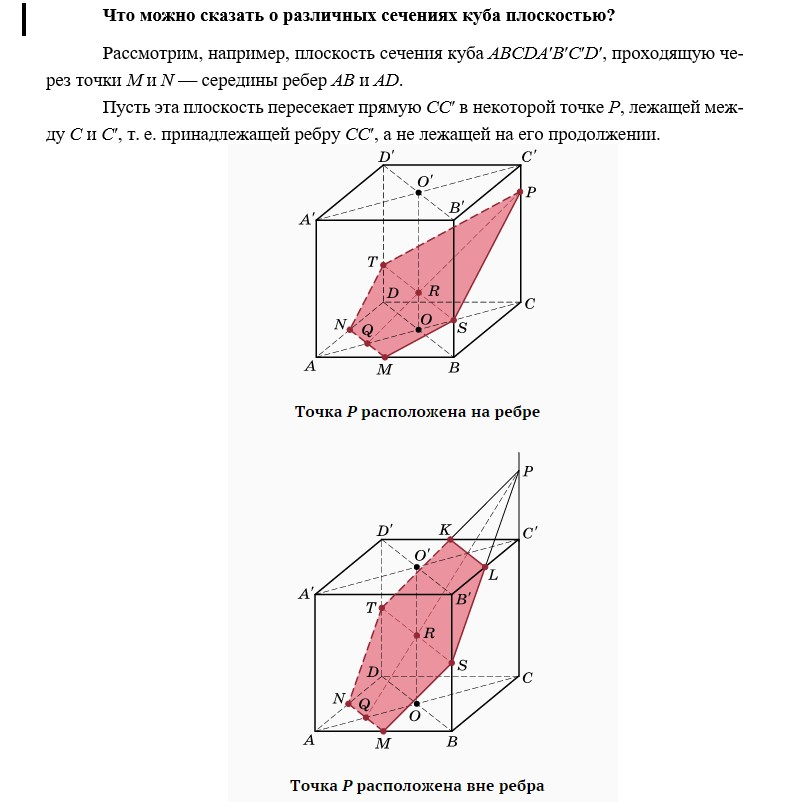
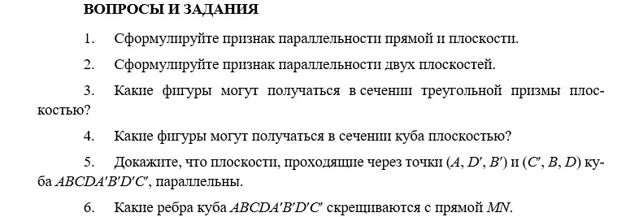

Рассмотрим диагональную плоскость AA′C′C. Она пересекает отрезок MN в точке Q — его середине, лежащей на диагонали основания AC. Прямая QP целиком лежит в плоскости сечения. Рассмотрим прямую OO′ — одну из осей куба. Пусть R — точка пересечения прямых QP и OO′. Прямая MN параллельна плоскости диагонального сечения BB′D′D (признак 1). Плоскость сечения проходит через эту прямую и пересекает плоскость BB′D′D по некоторой прямой, которая должна быть параллельна MN (признак 2).
Точка R лежит на этой линии пересечения. Мы получим, таким образом, эту линию, проведя в плоскости BB′D′D через точку R прямую, параллельную диагонали BD. Эта прямая пересекает ребра BB′ и DD′ в некоторых точках S и T. Пятиугольник MSPTN и является искомым сечением.
Если взять точку P на прямой CC′ немного выше точки C′, то получим в сечении шестиугольник, одна из сторон которого будет параллельна MN (признак 3). Когда это сечение пройдет через центр куба, то получится правильный шестиугольник. Проверьте это утверждение и рассмотрите самостоятельно другие сечения куба, проходящие через прямую MN.
